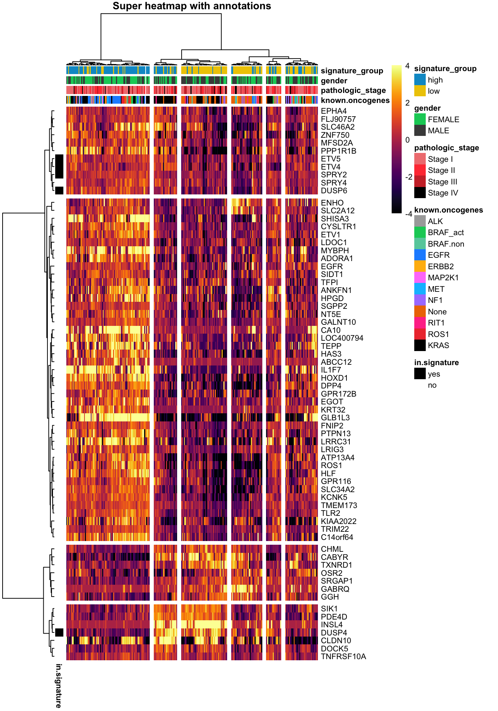
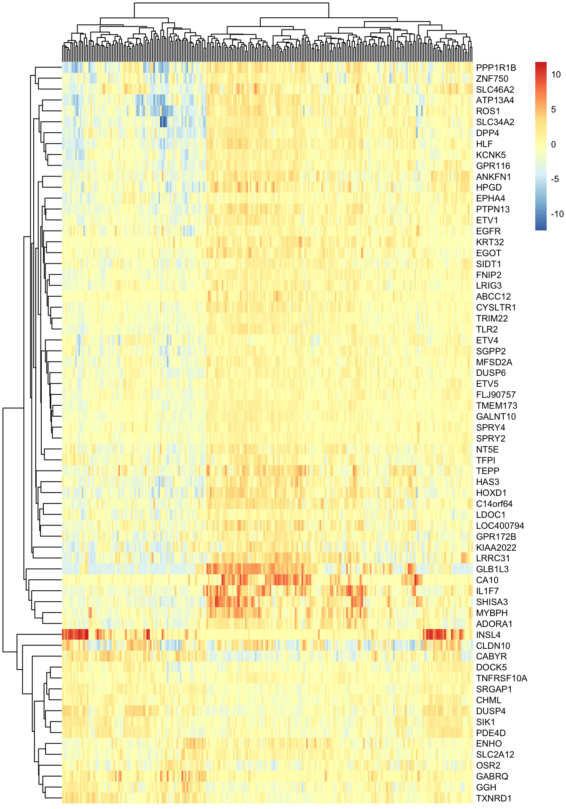

Follow the procedure using the interface to load the file or try to use the function read.table.
Clinical data: TCGA_LUAD_subset.tsv, name the variable clinical
Survival data: TCGA_LUAD_subset_survival.tsv, name the variable surv_dat
Expression data : TCGA_LUAD_expression.tsv, name the variable luad_expr
Code
# or you can try to adapt this codeclinical <-read.table("data/TCGA_LUAD_subset.tsv",sep="\t",head=T)head(clinical)
sampleID known.oncogenes Purity pathologic_stage gender
1 TCGA.05.4249.01 KRAS 0.49 Stage IB MALE
2 TCGA.05.4250.01 KRAS 0.50 Stage IIIA FEMALE
3 TCGA.05.4384.01 RIT1 0.49 Stage IIIA MALE
4 TCGA.05.4389.01 BRAF_act 0.48 Stage IA MALE
5 TCGA.05.4390.01 KRAS 0.57 Stage IB FEMALE
6 TCGA.05.4395.01 KRAS 0.61 Stage IIIB MALE
tobacco_smoking_history signature_MAPK
1 Current reformed smoker for > 15 years 0.9298746
2 Current reformed smoker for < or = 15 years 0.4811406
3 Current reformed smoker for > 15 years 0.5672071
4 Current reformed smoker for > 15 years 0.3474326
5 Current reformed smoker for < or = 15 years 0.8763612
6 Current reformed smoker for > 15 years 0.5578706
Before unfolding the code and answers boxes, try to find the solution from what we have seen in the lecture or by searching on the web, it should become an automatism, no one knows everything !
Use the function ggplot alone.
Code
ggplot()
A default grey background is displayed.
Display the axis: Add the data and choose the x and y axis from the column names that you can display using colnames. For instance, we want to evaluate the distribution of the MAPK activity signature (y-axis) in function of the known oncogenes (x-axis).
All the boxplots in red and filled with grey. You can search for how colors are named in R if you want to try your favorite colors. Many palettes are available through dedicated packages. (My favorite function to call for colors is colours() systematically installed and loaded with R, you can try some of my preferred ones: colours()[124], colours()[613], colours()[53], colours()[144]).
Key words to write on your favorite browser
R ggplot2 colors
Code
# the fonction colours() returns the name of the colorcolours()[124]
[1] "deepskyblue3"
Code
# use the function c() to concat several elements, we call it a vectorc(colours()[613], colours()[53], colours()[144])
You can play globally on the color of the borders (parameter color), the filling (parameter fill), the transparency (parameter alpha)) and more. The accessible aesthetics can vary according to the geometric shape, form. instance for lines you will have the width and the type.
Change the color of the boxplots in function of the known oncogenes
During the previous step the same colors have been applied to all boxplots, the goal here is to use the information contained in a column of our dataset (known.oncogenes). This is part of the aesthetics. Based on the current code, how would you add this information (2 possibilities) ?
Option 1
Code
# Directly in the aesthetics of the ggplot function that will be accessible for all# layersggplot(data = clinical, aes(x=known.oncogenes, y=signature_MAPK, color=known.oncogenes)) +# Add the new aesthetics colorgeom_boxplot() +# remove the global colorslabs(x="Known Oncogenes", y="MAPK activity signature") +theme_bw()
Option 2
Code
# Within the geom_boxplot() function which will define the aesthetics # with aes() only for this layerggplot(data = clinical, aes(x=known.oncogenes, y=signature_MAPK)) +geom_boxplot(aes(color=known.oncogenes)) +labs(x="Known Oncogenes", y="MAPK activity signature") +theme_bw()
By default the colors are not very contrasted … you can customize them by i) defining your own palette optionally by attributing a color to each category ; ii) find a predefined palette to help you to define the colors. To do this task, you will need to add a new layer by using a function that help in scaling the colors manually.
i) To define your own palette, you need to concatenate as many colors as the number of categories, here 12 colors. You can assign the colors to the categories by building a named vector.
Code
# We use the function c(), to name the elements of a vector you use the name you want# and you assign the values with the sign =palette.known.onco <-c(ALK="darkgrey",BRAF_act=colours()[613],BRAF.non=colours()[11],EGFR=colours()[128],ERBB2=colours()[76],MAP2K1=colours()[509],MET=colours()[121],NF1=colours()[468],None=colours()[92],RIT1=colours()[642],ROS1=colours()[34],KRAS="black")# Display the contentpalette.known.onco
ii) R natively provides a few continuous color palettes which means that you do not need to install and load any library. Also when you install ggplot2, it installs some dependencies (packages that ggplot2 needs to work properly), among them it installs the packages RColorBrewer, viridis, paletteer, khroma etc. and have implemented specific functions to use the palettes, it means that those packages are installed but not loaded. You can see which functions are available when typing scale_color_ on RStudio. If you want to use the functions from these packages you need to load the package but it is not mandatory. Finally, a lot more palettes are available through packages.
There is two ways, the first one is very simple and consists in inverting x and y aesthetics, the second one involves the addition of a new layer to flip the axis (preferred option and it provides more flexibility). Lets keep our own color palette palette.known.onco
This task consist of adding a new layer containing the points colored by known oncogenes. Which function should we use ? Note that there are two answers but one is more suitable for boxplot as it is adding some random noise to the positions in order to avoid overlaps.
Try to change the shape in plain triangle for all points and decrease opacity by half and to manage the size according to the tumor purity (column Purity).
Your goal is to produce the following density plot showing the density distributions of the MAPK signature in function of the known oncogenes (use palette.known.onco). Here we introduce the customization of the plot dimensions, we want to force the plot to have be x-axis 2 times longer than the y-axis which we call the aspect ratio. Thanks to it, you can force to have squared plots for instance.
Identify what contain the axis.
Answer
The x-axis contains the value of the column signature_MAPK and the y-axis indicates the density of the distribution, the y-axis do not need to be specified.
Make a list of the aesthetics you need to modify and layers that need to be added.
Answer
layers: the geometric shape, label of the x-axis, theme background, theme aspect ratio, custom color palette
aesthetics: x-axis , color of the lines
Write your code ! (Do not forget your best friend: the Web)
Your goal is to produce the following bar plot showing the number of tumor from genders (column gender - play with the transparency) harboring each known oncogene. In this case the aspect ratio is inverse compared to the previous one.
Identify what contain the axis.
Answer
The x-axis indicates the number of sample harboring the known oncogene, the x-axis do not need to be specified. The y-axis indicates the known oncogenes. As a reminder, one would prefer to flip the coordinates but it is not mandatory.
Make a list of the aesthetics you need to modify and layers that need to be added.
Answer
layers: the geometric shape, label of the y-axis, theme background, theme aspect ratio, custom color palette
aesthetics: y-axis , color of the lines, fill of the bars, transparency according to gender
Write your code ! (Do not forget your best friend: the Web)
The goal of this section is to manipulate the expression (luad_expr) and clinical datasets (clinical) by filtering for patients harboring specific known oncogene, having extreme MAPK activity signal. We want to observe the correlation between the signature and the genes that were used to compute it: ETV4, ETV5, DUSP6, DUSP4 and SPRY2. We will use scatter plots (basically visualizing samples with points), linear regression estimation and a heatmap using the package corrplot. The expression dataset was subset by filtering for genes involved from closer or farther to MAPK signalling. We will operate a clustering of the samples and genes and visualize the expression of the genes using a heatmap that we will annotate using the package pheatmap.
Prepare the data
Join the clinical annotations with the expression of the MAPK signature genes.
The best way to complete this task is to i) filter for our genes of interest by declaring a variable named gene.of.interest containing a vector with the gene symbols and ii) transpose (flip columns and rows) the expression table (luad_expr). The function allowing this operation return a object of type matrix , this type is not suitable for ggplot and not convenient for easy manipulation. We need to transform it in data.frame format. iii) Create a column sampleID containing the sample identifiers present as row names. iv) Merge the 2 data.frames.
Note: In R, if possible, you can transform the type of variables using functions starting with as. followed by the desired format. For instance you have a character string "42" that you want to transform in numeric, you can run as.numeric("42").
i) Create gene.of.interest containing the genes and filter for the rows containing the expression of these genes by creating a new variable expression.selected
Code
# Create a vector of characters using c()gene.of.interest <-c("ETV4", "ETV5", "DUSP6", "SPRY2","DUSP4")# The gene symbols are the row names, then the gene of interest are used as indicesexpression.selected <- luad_expr[gene.of.interest,]
ii) Transpose the data.frame expression.selected
Code
# Transpose the data.frame with t()expression.selected <-t(expression.selected)# show the type of expression.selectedclass(expression.selected)
[1] "matrix" "array"
Code
# Transform expression.selected as data.frame expression.selected <-as.data.frame(expression.selected)# show the first lines of the tablehead(expression.selected)
clinical <-merge(clinical,expression.selected, by="sampleID")# Always verify the object you obtain head(clinical)
sampleID known.oncogenes Purity pathologic_stage gender
1 TCGA.05.4249.01 KRAS 0.49 Stage IB MALE
2 TCGA.05.4250.01 KRAS 0.50 Stage IIIA FEMALE
3 TCGA.05.4384.01 RIT1 0.49 Stage IIIA MALE
4 TCGA.05.4389.01 BRAF_act 0.48 Stage IA MALE
5 TCGA.05.4390.01 KRAS 0.57 Stage IB FEMALE
6 TCGA.05.4395.01 KRAS 0.61 Stage IIIB MALE
tobacco_smoking_history signature_MAPK ETV4 ETV5
1 Current reformed smoker for > 15 years 0.9298746 1.3836 0.1853
2 Current reformed smoker for < or = 15 years 0.4811406 -0.0887 -0.7296
3 Current reformed smoker for > 15 years 0.5672071 0.1500 0.3113
4 Current reformed smoker for > 15 years 0.3474326 1.5354 0.1011
5 Current reformed smoker for < or = 15 years 0.8763612 1.4936 1.7163
6 Current reformed smoker for > 15 years 0.5578706 -0.0357 -0.2430
DUSP6 SPRY2 DUSP4
1 1.3425 1.0779 -0.8597
2 1.9359 -0.6727 1.6258
3 -0.3967 -0.2302 1.9846
4 -1.7601 -1.2368 0.7884
5 0.8185 -0.1814 3.5773
6 1.8469 -0.6158 2.6318
What are this plot ?
Analyse the following code chunks, comment all the layers of each plot, which plots would you expect ? What do you need to be able to run these codes. Ask the web or chatGPT !
We want to analyse the correlation between the genes of the MAPK activity signature. To this end, we need to install and load the corrplot package. You will use the table stored in expression.selected, you need to remove the column containing the sample IDs and compute the correlation between the columns and store the result in a variable.
# install the package that is in CRAN repositoryinstall.packages("corrplot")# load the librarylibrary(corrplot)# compute the correlation, by default it compute the correlation between columnsM <-cor(expression.selected) # the plot !corrplot(M, addCoef.col ='black', order ='AOE', col =COL2('PiYG'), tl.pos ='d', cl.pos ='b')
Bonus: Heatmap
In this section, we want to visualise the gene expression across all samples using a heatmap and highlight potential expression patterns using sample and gene clustering.
What is a heatmap ?
In a heatmap, each row usually represents a gene. Each column represents a sample. The rectangles containing the values are also called “cells”.
The colour and intensity of the cells is used to represent values of gene expression. So, basically, instead of numbers, we use colours. The colour will be more intense the lower (or higher) the value is.
To see patterns, we cluster (meaningful reordering) the rows and columns. This just means we group the samples and/or genes together based on the similarity of their gene expression pattern. The dendograms on the sides just indicate the results of clustering both genes and samples.
A clustering algorithm will group genes with a similar expression across samples together: groups of genes that are highly expressed in some samples, and lowly expressed in other samples will be clustered together. In a similar way, samples with a similar expression pattern (in general having certain sets of genes highly expressed and certain sets of genes lowly expressed) will be clustered together.
In summary, adding clustering to heatmaps can be useful for identifying genes that are commonly regulated, or biological signatures associated with a particular condition (for example, high MAPK activity).

Step by step
Before starting …
i) We need to find a package that allow us to draw (pretty) annotated heatmaps. Lets search on the web what we could try.
Key words to write on your favorite browser
R How to draw annotated heatmap
The package we will be using
pheatmap
ii) Install the package.
Code
install.packages("pheatmap")library(pheatmap)
Step 1 : Prepare the data
To be able to annotate the heatmap we need to build the annotations for the samples (clinical) and the genes (genes.of.interest) and associate colours to the categories for each feature.
i) Annotation of the samples
Using the variable clinical, extract the the columns known.oncogenes, pathologic_stage, gender, signature_group in a new variable anno.columns.
known.oncogenes pathologic_stage gender signature_group
1 KRAS Stage IB MALE high
2 KRAS Stage IIIA FEMALE low
3 RIT1 Stage IIIA MALE low
4 BRAF_act Stage IA MALE low
5 KRAS Stage IB FEMALE high
6 KRAS Stage IIIB MALE low
To allow the tool to map the annotations to the samples in the expression dataset, we need to name the row with the sample identifiers that are stored in the column sampleID of clinical.
known.oncogenes pathologic_stage gender signature_group
TCGA.05.4249.01 KRAS Stage IB MALE high
TCGA.05.4250.01 KRAS Stage IIIA FEMALE low
TCGA.05.4384.01 RIT1 Stage IIIA MALE low
TCGA.05.4389.01 BRAF_act Stage IA MALE low
TCGA.05.4390.01 KRAS Stage IB FEMALE high
TCGA.05.4395.01 KRAS Stage IIIB MALE low
To define the colours for each feature, you need to build a list using the constructor function list() in which each element will be a named vector of colors as you have already made to create palette.known.onco. For that you have to know all possible categories for each feature. table() is an easy and very useful function to display all categories with the number of sample per category.
table(anno.columns$gender)
FEMALE MALE
122 124
table(anno.columns$pathologic_stage)
Stage I Stage IA Stage IB Stage IIA Stage IIB Stage IIIA Stage IIIB
3 58 68 21 36 40 6
Stage IV
14
etc
You can see that for the pathological stages, there are subcategories A and B that we want to regroup in order to simplify the visualisation. To group the sub-categories, we will remove the A and B from the end of the words using the function sub(). Try to write the code, many answers are possible.
Here are 2 possibilities:
Code
anno.columns$pathologic_stage <-sub("A","",anno.columns$pathologic_stage)anno.columns$pathologic_stage <-sub("B","",anno.columns$pathologic_stage)# The cleanest way of coding this task isanno.columns$pathologic_stage <-sub("[AB]$","",anno.columns$pathologic_stage)# [AB] indicates that at the first position you encounter
ii) Annotations of the genes
We want to identify the genes belonging to the MAPK activity signature. To this end, we create a data.frame using the constructor function data.frame() with the row names corresponding to the gene names and containing one column in.signature containing yes or no.
Create a vector containing “yes” or “no” depending on the gene presence in the signature. Many possibilities exist but the best way is to use the function ifelse(). This function takes 3 arguments, an expression comparing the gene names (row names of the table luad_expr) with the genes of interest (gene.of.interest), what the function must return if the comparison is TRUE (the gene is in the signature, “yes”), what the function must return if the comparison is FALSE (the gene is not in the signature, “no”).
To know if the elements of a vector are present in an other vector we use the operator %in%.
Try to write the code that allow to obtain the yes/no vector using ifelse() and genes.in.signature and keep the results in a variable called in.signature.
# Create annotation for the rows containing the genes: # we want to indcate the genes involved in the signatureanno.rows <-data.frame(row.names=row.names(luad_expr),in.signature)head(anno.rows)
in.signature
HLF no
SIDT1 no
KCNK5 no
NT5E no
ANKFN1 no
OSR2 no
Add colors for this feature to the list of colors colors.anno.
specify how to aggregate the rows and columns based on their distance (1 parameters)
Answer
clustering_method = "complete"
Step 2 : Customize your heatmap
By analysing the default heatmap, we can notice that column labels are not readable and are not adding relevant information, we want to remove them, the row names are readable but we want to decrease the size of the font. We will test different method for clustering the rows and columns. We would like to change the colors of the cells to make them more divergent using for instance the color palette from viridis and we want to intensify the differences by lowering the range value amplitude (between -4 and 4), meaning that values outside of this range will display the extreme colors. We then want to annotate the samples and genes with nice colors, separate the clusters and finally add a tittle.
i) Row and column names
By looking at the help of the function (?pheatmap) or online, identify the parameters (and adapt their values) that:
Enable the display of the column names and disable it.
Answer
show_colnames = T # default
Enable to decrease the font size
Answer
fontsize = 10 # default
Code
pheatmap(luad_expr,cluster_rows = T, cluster_cols = T, # set to FALSE if you want to remove the dendogramsshow_colnames = F, # displaying column namesshow_rownames = T, # displaying row namesfontsize =8# change font size )

ii) Change the colors
By looking at the help of the function (?pheatmap) or online, identify the parameters (and adapt their values) that:
Enable to set the color palette. In the example we used the inferno palette from the package viridis and asked for 100 colors.
Answer
color = colorRampPalette(rev(brewer.pal(n = 7, name = "RdYlBu")))(100) # Default
Enable to change the amplitude of the colors between -4 and 4
Answer
breaks = NA # default
Code
pheatmap(luad_expr,cluster_rows = T, cluster_cols = T, # set to FALSE if you want to remove the dendogramsshow_colnames = F, # displaying column namesshow_rownames = T, # displaying row namesclustering_distance_cols ='correlation',clustering_distance_rows ='correlation',clustering_method ='ward.D', # how to aggregate rows and columns depending on their distancecolor = viridis::inferno(100), # choose a colour scale for your databreaks =seq(-4,4,0.08), # seq produce a vector from -4 to 4 with a step of 0.08 (100 values)fontsize =8# change font size )
iii) Choose the clustering methods
Using the parameters you identified earlier for clustering methods, test several combinations to observe the impact on the results. You can find bellow the definition of the different methods. In the example, we chose to cluster following the correlation distance and the ward.D agglomeration methods.
Distance methods
Euclidean Distance: This is like drawing a straight line between two points. It's the most intuitive way to measure distance, like the shortest path “as the crow flies” between two locations on a map.
Manhattan Distance: Think of how you would walk in a city laid out like a grid, where you can only move horizontally or vertically. The Manhattan distance measures the total number of blocks you would walk.
Correlation Distance: Instead of focusing on actual distance, this measures how similar the patterns or trends are between points. It's useful when you care about how things change together rather than how far apart they are.
Maximum Distance (Chebyshev): This only looks at the largest difference in any single direction (horizontal or vertical). Imagine trying to figure out how far two buildings are by only checking the longest side of the blocks between them.
Canberra Distance: This one gives more weight to differences when values are small. It’s useful when small differences matter a lot in your data.
Binary Distance: This is used for yes/no or presence/absence type data. It simply compares if two points have the same “yes/no” values.
Minkowski Distance: This is a general form of both Euclidean and Manhattan distances. By changing a parameter, it can behave like either Euclidean (straight line) or Manhattan (grid-based).
Agglomeration methods
Ward’s Method (ward.D, ward.D2): This tries to form groups that minimize the difference within each cluster. It prefers clusters where data points are very similar to each other. It's great for balanced, compact groups.
Single Linkage (single): This method focuses on the smallest distance between points in two clusters. It can create “chains” of points that are loosely connected, leading to long, stretched-out clusters.
Complete Linkage (complete): This method uses the largest distance between points in two clusters. It prefers tight, compact clusters, and avoids the stretched-out effect of single linkage.
Average Linkage (average/UPGMA): Here, we average the distances between all pairs of points in two clusters. It balances between tight and loose clusters, forming more moderate-sized groups.
McQuitty’s Method (mcquitty/WPGMA): Similar to average linkage, but it calculates the average in a slightly different way. It's another method to balance between close and distant points.
Median Method (median/WPGMC): This method looks at the median distances between points, creating balanced clusters that can handle uneven data well.
Centroid Method (centroid/UPGMC): This method calculates the “center” of clusters (think of the average location of all points in the cluster) and uses that to decide how to group them.
Code
pheatmap(luad_expr,cluster_rows = T, cluster_cols = T, # set to FALSE if you want to remove the dendogramsshow_colnames = F, # displaying column namesshow_rownames = T, # displaying row namesclustering_distance_cols ='correlation',clustering_distance_rows ='correlation',clustering_method ='ward.D', # how to aggregate rows and columns depending on their distancefontsize =8# change font size )
iv)Separate clusters
By looking at the help of the function (?pheatmap) or online, identify the parameters (and adapt their values) that:
Enable to show distinct clusters, in the example, 6 sample clusters and 4 gene clusters (2 parameters)
Answer
cutree_rows = NA # Default
cutree_cols = NA # Default
Code
pheatmap(luad_expr,cluster_rows = T, cluster_cols = T, # set to FALSE if you want to remove the dendogramsshow_colnames = F, # displaying column namesshow_rownames = T, # displaying row namesclustering_distance_cols ='correlation',clustering_distance_rows ='correlation',annotation_row = anno.rows, # row (gene) annotationsannotation_col = anno.columns, # column (sample) annotationsannotation_colors = colors.anno, # colours for your annotationsclustering_method ='ward.D', # how to aggregate rows and columns depending on their distancecolor = viridis::inferno(100), # choose a colour scale for your databreaks =seq(-4,4,0.08),cutree_cols =6, # display column clusterscutree_rows =4, # display row clustersfontsize =8# change font size )